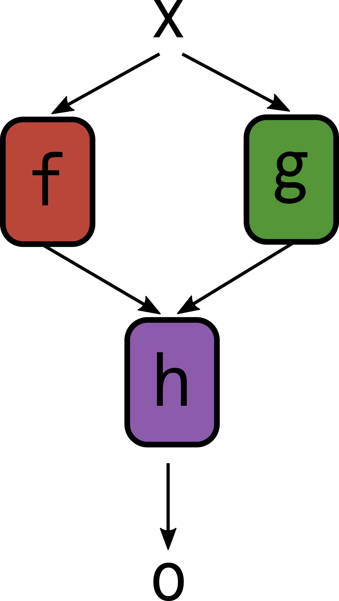

Introduction
Adapted from Transformers.jl
TopoChains.jl allows you to cleanly build flexible neural networks whose layers can take any number of inputs, and produce any number of outputs. It achieves this by seperating the layers from the overall topology (that is, the structure) of the model. This is done through an instance of the FuncTopo type, which specifies the inputs/outputs the layers take in/produce.
This package provides two core features:
@functopo: A macro that uses a compact DSL (Domain Specific Language) to store the structure of the model in aFuncTopo.TopoChain: Similar to aFlux.Chain, except it takes in anFuncTopoas its first argument to determine how to handle the multiple inputs/outputs across layers.
TopoChain
A TopoChain is similar to a Flux.Chain and comes with many of the same features, such as parameter collection, indexing, slicing, etc. The big change is that the first input to a TopoChain is a FuncTopo, which specifies how the layers should be called, This allows us to flexibly build complex architectures.
TopoChains.TopoChain — TypeTopoChain(topo::FuncTopo, layers...)Similar to a Flux.Chain, with the addition of the use of an FuncTopo to define the order/structure of the functions called.
Example
julia> topo = @functopo (x1, x2):x1 => a:x2 => b:(a, b) => c => o
julia> model = TopoChain(topo,
Dense(32, 64),
Dense(32, 64),
(x, y) -> x .* y,
Dropout(0.1))
TopoChain(Dense(32, 64), Dense(32, 64), #19, Dropout(0.1)) representing the following function composition:
function(x1, x2)
a = Dense(32, 64)(x1)
b = Dense(32, 64)(x2)
c = #19(a, b)
o = Dropout(0.1)(c)
o
endAs we can see, with the help of the FuncTopo, the TopoChain not only holds the layers in a model, but also information on how to call the layers in a model as well.
FuncTopo
We store the structure of the model in a FuncTopo, short for "Function Topology", by noting that a model is essentially a large function composed of many smaller functions. At its core, it is simply used to define inputs and outputs for each function in a sequence of function calls. Consider it a supercharged version of Julia's piping operator (|>).
FuncTopos are usually created by using the @functopo macro as shown:
TopoChains.@functopo — Macro@functopo structureCreate a FuncTopo to apply functions according to the given structure.
Example
julia> @functopo (x1, x2):(x1, x2) => a:x1 => b:(a, b) => c => o
FuncTopo{"(x1, x2):(x1, x2) => (a:x1 => (b:(a, b) => (c => o)))"}
function(model, x1, x2)
a = model[1](x1, x2)
b = model[2](x1)
c = model[3](a, b)
o = model[4](c)
o
endWe now take a look at how @functopo is used, as well a deep dive into the syntax used in structure in the following sections, so you can write your own ones for use in your own models!
A first example
Suppose you have inputs x1 and x2 you want to pass through the functions f, g and h as follows to get the output o:

You could do the following in regular Julia:
a = f(x1, x2)
b = g(x1)
c = h(a, b)
o = m(c)This is functional, but gets increasingly unwieldy as the number of functions/layers in your models grow. With the TopoChains.jl approach, we seperate the structure from the actual function calls. In this case, we first define the structure as follows:
topo = @functopo (x1, x2):(x1, x2) => a:x1 => b:(a, b) => c => oThe @functopo macro then takes the information given, and produces the FuncTopo instance topo that keeps track of how to call the functions, once given the functions:
topo
# FuncTopo{"(x1, x2):(x1, x2) => (a:x1 => (b:(a, b) => (c => o)))"}
# function(model, x1, x2)
# a = model[1](x1, x2)
# b = model[2](x1)
# c = model[3](a, b)
# o = model[4](c)
# o
# endHere, model stands in for an iterable (e.g. a Tuple or Vector) of functions and layers. While the most typical use of an FuncTopo will be passing it as input to a TopoChain, we can indeed use topo directly by passing in the functions and inputs:
x1 = 3
x2 = 2
f(x, y) = x^2 - y
g(x) = x^3
h(x, y) = x + y
m(x) = mod(x, 4)
topo((f, g, h, m), x1, x2) # 2Let's take a deep dive into the syntax used in defining the structure here.
The syntax of FuncTopo
1. Variable names
We use multiple variable names when defining the structure (e.g. x, c, etc.). These are the names of the intermediate outputs in the function generated by FuncTopo. Similar to how x in g(x) = x^3 has no relation with a previously defined x in the Julia session, the variables used to specify the structure have no relation with previously defined variables.
2. Applying functions
Each application of a function is represented with a =>, with the input variables on the left and output variables on the right. For instance, a => b means "take the variable a and pass it to the function to produce the output b. This also allows us to chain functions together. Suppose you want to chain the functions p, q and r as follows:
y = r(q(p(x))) You could equivalently write the following with the TopoChains.jl approach, seperating the structure from the functions:
julia
topo = @functopo x:x => a:a => b:b => y
y = topo((p, q, r), x) When the actual function calls are made, the functions are used in the order they were passed in. Here the tuple of functions is (p, q, r) and so the first arrow in structure corresponds to applying the first function p, the second arrow applies q, and so forth.
3. Seperating inputs and outputs
Notice that we use a : to seperate the input/output variable names for each function call. If the : is not present, we will by default assume that all output variables are the inputs of the next function call. This can be used to simplify structures. Above, we wrote
@functopo x:x => a:a => b:b => y when we could just as well have written
@functopo x => a => b => y 4. Multiple inputs and outputs
When a function has multiple inputs/outputs, we use a tuple of variables instead of variables. For instance, a function that takes two inputs and produces three outputs would be specified as (a, b) => (x, y, z)
Summary
The complete syntax for a structure can then be viewed as:
(input arguments):(function1 inputs) => (function1 outputs):(function2 inputs):(function2 outputs) => .... => (function_n outputs):(return variables)Repeated Substructures
Suppose in the structure of your model, there are repeated substructures. For instance, suppose you have a pair of layers:
- The first of which takes an output and produces two outputs
- The second takes two outputs and produces one output
And say that this pair structure is repeated 3x in your model. Instead of writing it out in full, you can do so more concisely with the following syntax:
topo = @functopo (y => (z1, z2) => t) => 3When the output of a => is an integer N instead of a variable, instead of applying a function we repeat the sub-structure (specified in between the brackets ( and )) N times. Indeed, we can see this produces the expected behavior:
topo
# FuncTopo{"(y => ((z1, z2) => t)) => 3"}
# function(model, y)
# (z1, z2) = model[1](y)
# t = model[2](z1, z2)
# (z1, z2) = model[3](t)
# t = model[4](z1, z2)
# (z1, z2) = model[5](t)
# t = model[6](z1, z2)
# t
# endNested repeated substructures
We can also nest our substructure repeats. This allows us to quickly specify complex models rather concisely. For instance:
topo = @functopo x => ((y => z => t) => 3 => w) => 2
topo
# FuncTopo{"x => (((y => (z => t)) => (3 => w)) => 2)"}
# function(model, x)
# y = model[1](x)
# z = model[2](y)
# t = model[3](z)
# z = model[4](t)
# t = model[5](z)
# z = model[6](t)
# t = model[7](z)
# w = model[8](t)
# z = model[9](w)
# t = model[10](z)
# z = model[11](t)
# t = model[12](z)
# z = model[13](t)
# t = model[14](z)
# w = model[15](t)
# w
# end